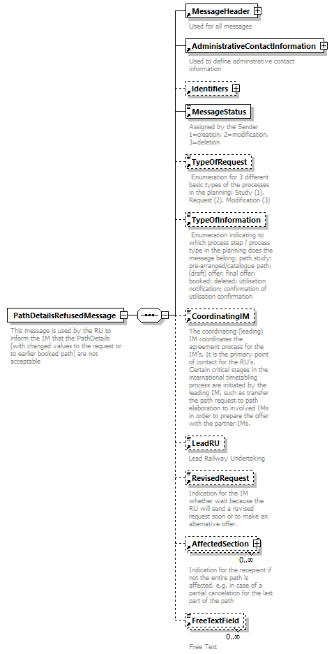

| diagram |  | ||
| namespace | http://taf-jsg.info/schemes | ||
| properties |
|
||
| children | MessageHeader AdministrativeContactInformation Identifiers MessageStatus TypeOfRequest TypeOfInformation CoordinatingIM LeadRU RevisedRequest AffectedSection FreeTextField | ||
| annotation |
|
||
| source | <xs:element name="PathDetailsRefusedMessage"> <xs:annotation> <xs:documentation>This message is used by the RU to inform the IM that the PathDetails (with changed values to the request or to earlier booked path) are not acceptable</xs:documentation> </xs:annotation> <xs:complexType> <xs:sequence> <xs:element ref="MessageHeader"/> <xs:element ref="AdministrativeContactInformation"/> <xs:element ref="Identifiers" minOccurs="0"/> <xs:element ref="MessageStatus"/> <xs:element ref="TypeOfRequest" minOccurs="0"/> <xs:element ref="TypeOfInformation" minOccurs="0"/> <xs:element ref="CoordinatingIM" minOccurs="0"/> <xs:element ref="LeadRU" minOccurs="0"/> <xs:element ref="RevisedRequest" minOccurs="0"/> <xs:element ref="AffectedSection" minOccurs="0" maxOccurs="unbounded"/> <xs:element ref="FreeTextField" minOccurs="0" maxOccurs="unbounded"/> </xs:sequence> </xs:complexType> </xs:element> |